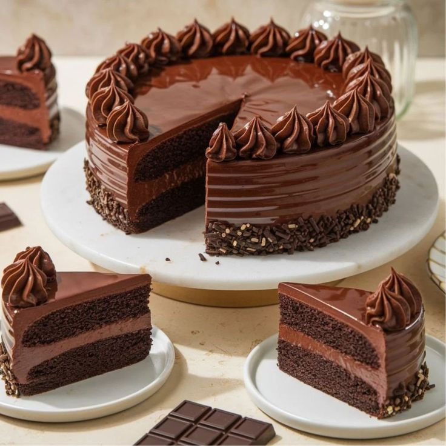

Moist Chocolate Cake
Introduction
Chocolate cake is probably the most celebrated dessert in the world. This recipe produces a moist, rich, and soft cake that feels luxurious without being overly complicated. It uses cocoa powder and hot water to deepen the chocolate flavor, and sour cream (or yogurt) to keep the crumb tender. Frost it with a simple chocolate buttercream or ganache for a show-stopping centerpiece. This cake is perfect for birthdays, holidays, or even just as a weekend treat with coffee. Once you try baking it at home, you may never go back to boxed mixes again.
Ingredients
- 1 3/4 cups all-purpose flour
- 3/4 cup cocoa powder
- 2 cups sugar
- 1 1/2 tsp baking powder
- 1 1/2 tsp baking soda
- 2 large eggs
- 1 cup milk
- 1/2 cup vegetable oil
- 2 tsp vanilla extract
- 1 cup hot water
Instructions
- Preheat oven to 350°F (175°C). Grease and flour two 9-inch round pans.
- Whisk dry ingredients (flour, cocoa, sugar, baking powder, baking soda).
- Add eggs, milk, oil, and vanilla. Beat until smooth. Stir in hot water (batter will be thin).
- Pour into pans and bake 30–35 minutes until a toothpick comes out clean.
- Cool completely before frosting. Layer with chocolate buttercream for best results.